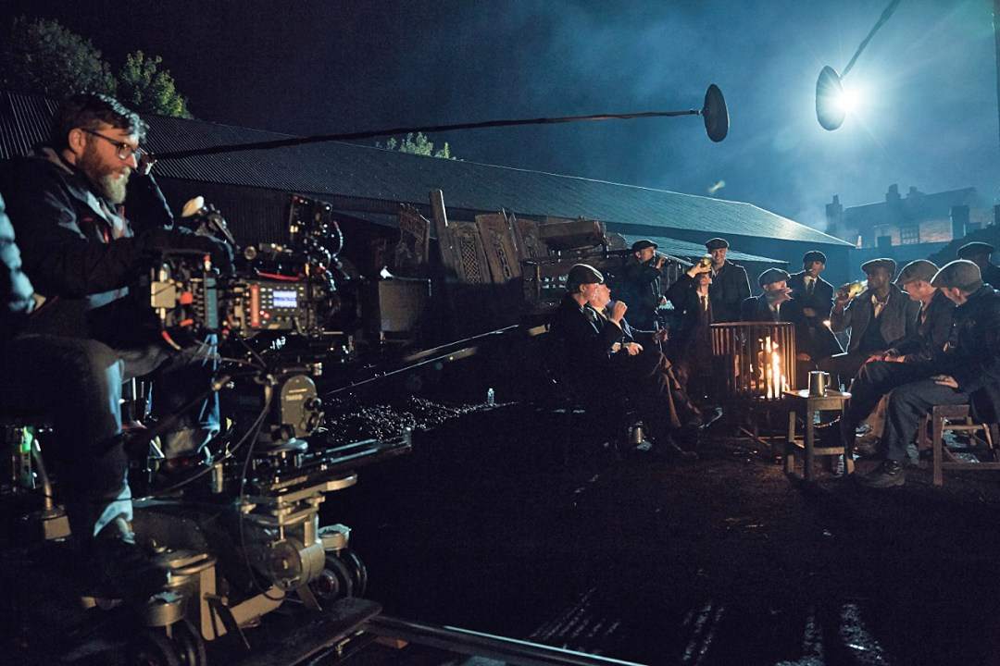

.png)
Fotografía
Como cada capítulo (o cada varios capitulos), los DOP’s cambian, pues con ellos también cambian algunas cosas; como las lentes usadas. Aunque toda la serie está realizada con cámaras Arri Alexa, cada DOP puede usar un juego de lentes diferente. Obviamente esto es debido al gusto y a la experiencia de cada uno/a. Por ejemplo, algun director de fotografía ha usado las lentes Zeiss Super Speed, y otro asegura usar una combinación de lentes Arri y Fujinon. Otro por ejemplo asegura usar un filtro en cámara Black Frost para difuminar los bordes más duros y marcados de la imágen. En definitiva cada DOP deja su marca personal, bien sea por las lentes, por algún filtro o otras muchas más rarezas y/o técnicas.
La altura de la cámara casi siempre es contra-picada Suele predominar el que la altura de la cámara está por debajo de la altura de los ojos de los personajes. Es una técnica perfecta para resaltar y agrandar a aquellos personajes a los que se les quiere, pues eso, resaltar y agrandar. Eso ayuda a transmitirle al espectador la importancia y fuerza del personaje. En este caso, de la familia de los Peaky Blinders. Algo que también se puede apreciar viendo dos planos de la serie es que se usan bastantes lentes de distancia focal corta, es decir, angulares. Depende del uso narrativo, este tipo de lentes distorsiona la imagen, pero por otro lado esa distorsión puede ayudar a enfatizar a la «banda», a los Peaky. Peaky Blinders no es una serie que abuse notablemente del bokeh ni de las profundidades de campo muy cortas. De hecho suele estar casi todo nítido, bien enfocado. A parte de ser una estrategia visual y tener su significado narrativo, también ayuda a que el espectador conozca el entorno, con detalles de los personajes. De esa manera también se trabaja con diafragmas más pronto cerrados que ayuda a obtener una mayor nitidez.